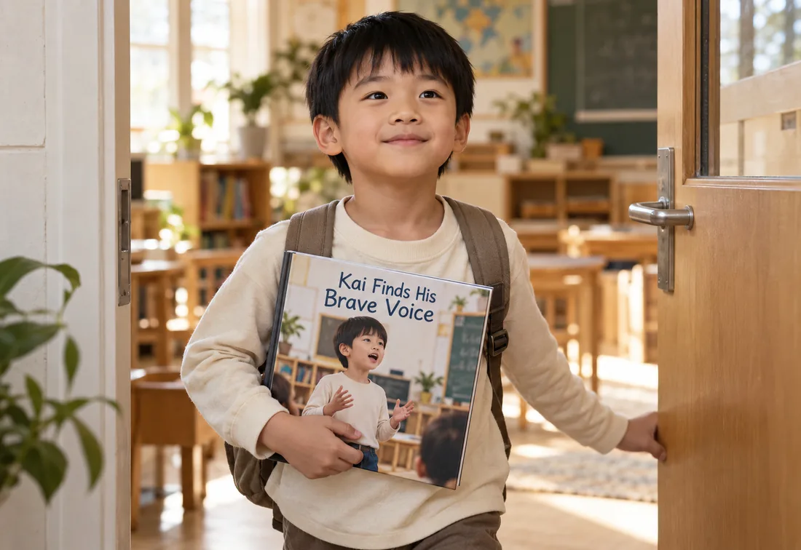
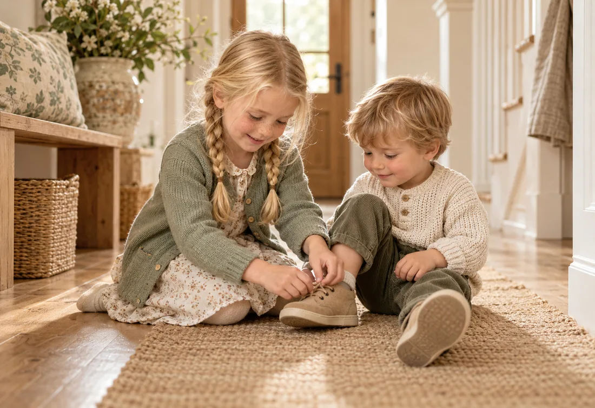
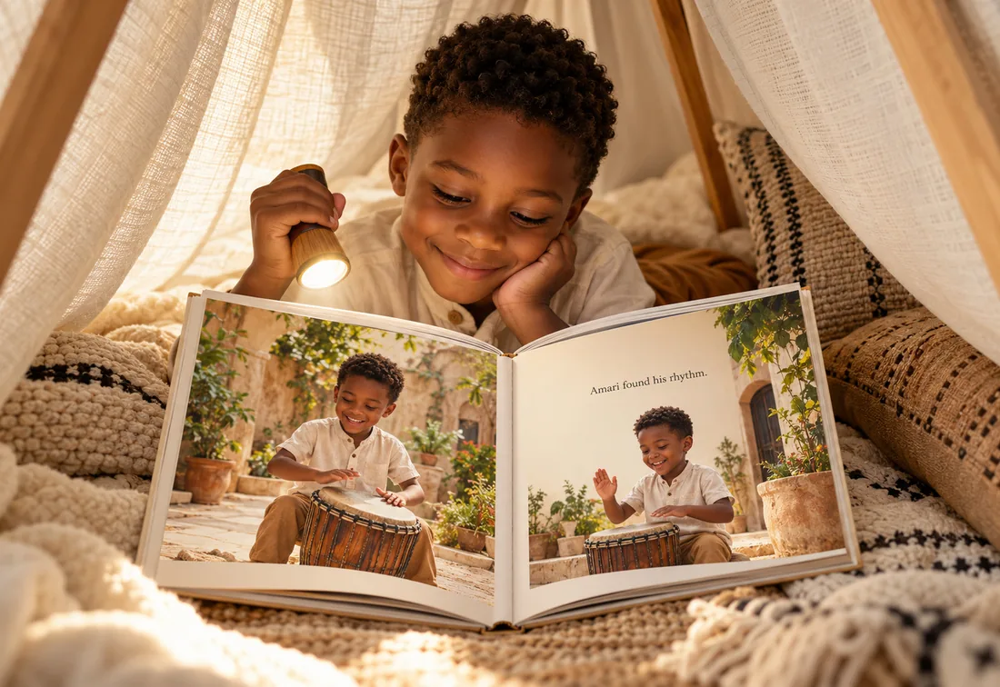
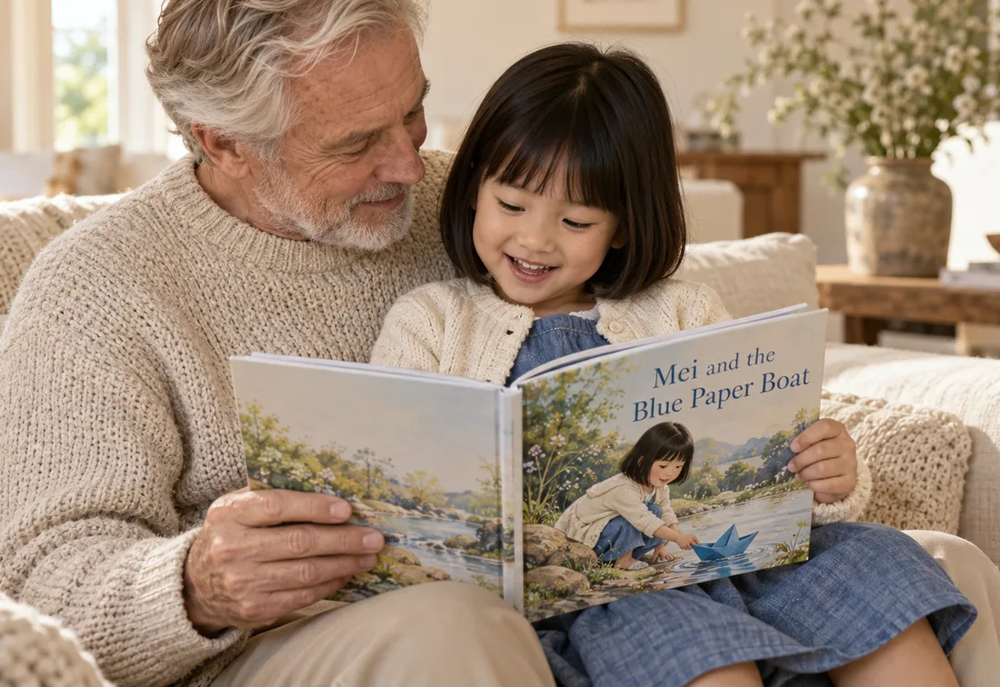

Stories for real childhood moments.
From big feelings to everyday adventures, our stories are inspired by the moments that shape who they become.

Courage
Trying new things and finding out they're braver than they knew.

Kindness
Helping, sharing and joining in.
-
Emotions
Big feelings, honesty and making things right.

Imagination
Adventures that start in bed and end among the stars.

Family
Grandparents, siblings and the people who love them most.
-
Growing
Moving house, screen time and new routines.